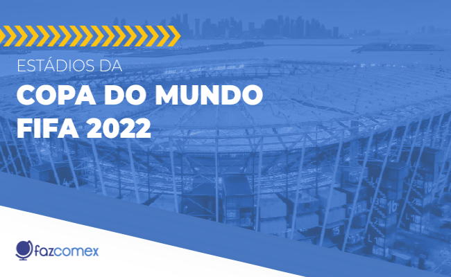

.png)

A história da Copa do Mundo de Futebol da FIFA se iniciou em 1930, durante um congresso da entidade, quando Jules Rimet conseguiu a aprovação para criar um torneio internacional. A primeira competição ocorreu em 1930, tendo a participação de 13 equipes convidadas, tendo o Uruguai como país-sede e como campeão.
O Uruguai tem dois títulos mundiais (1930 e 1950) e duas medalhas de ouro olímpicas (1924 e 1928). Em 1954, 1970 e 2010 o Uruguai ficou com o 4º lugar no Mundial.
 Gana venceu cinco vezes a Copa da África Ocidental em 1982, 1983, 1984, 1986 e 1987. E participou três vezes da Copa do Mundo (2006, 2010, 2014).
Gana venceu cinco vezes a Copa da África Ocidental em 1982, 1983, 1984, 1986 e 1987. E participou três vezes da Copa do Mundo (2006, 2010, 2014).
Portugal terminou em segundo lugar no Grupo A das eliminatórias europeias para a Copa do Mundo, atrás da Sérvia, com cinco vitórias, dois empates e uma derrota.
O Troféu da Copa do Mundo FIFA é um troféu de ouro concedido aos vencedores da Copa do Mundo FIFA. Desde o advento do torneio em 1930, foram usadas duas versões.
 O futebol da Coreia do Sul sempre foi um dos mais desenvolvidos da Ásia. Porém, em Copas do Mundo, sua melhor performance foi na edição de 2002, quando foi uma das sedes do torneio, junto com o Japão.
O futebol da Coreia do Sul sempre foi um dos mais desenvolvidos da Ásia. Porém, em Copas do Mundo, sua melhor performance foi na edição de 2002, quando foi uma das sedes do torneio, junto com o Japão.
.png) A Copa do Mundo 2022, que será disputada no Catar a partir de 20 de novembro, já tem o modelo da bola escolhido: trata-se da Al Rihla, que significa "A viagem", em árabe. Ela é inspirada na arquitetura, cultura e na bandeira do Catar.
A Copa do Mundo 2022, que será disputada no Catar a partir de 20 de novembro, já tem o modelo da bola escolhido: trata-se da Al Rihla, que significa "A viagem", em árabe. Ela é inspirada na arquitetura, cultura e na bandeira do Catar.